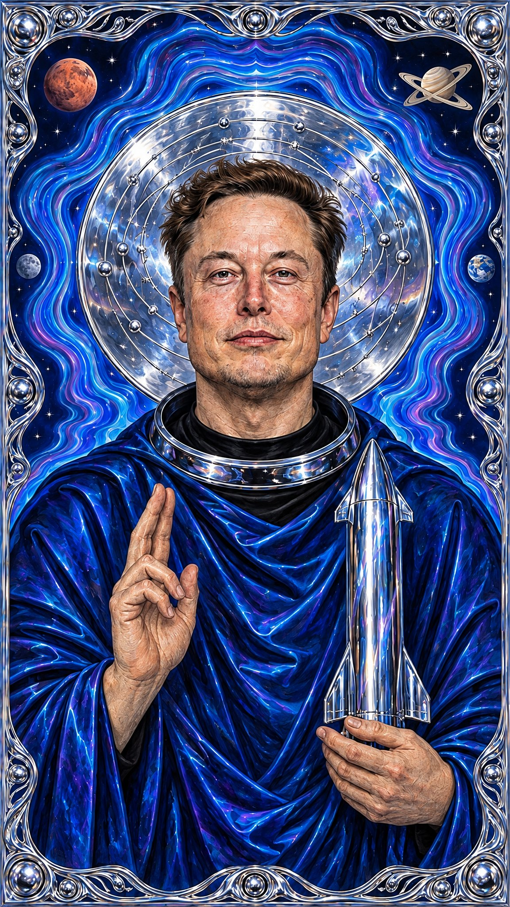

Your words stay on this phone. The icon is an AI-made picture.
Ask 2050 for something. Light a candle, send your words up on a rocket, and take a verse back.
A party joke. The icon is an AI-made picture and Elon Musk has nothing to do with this page; the verses are his real posts about 2050. Slow moving colour, no flashing.